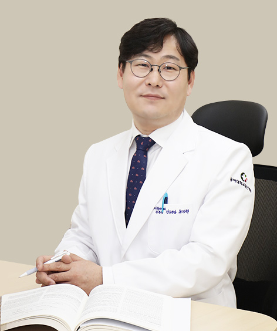

학력/경력/활동
- 동아대학교 의과대학 졸업
- 동아대학교 대학원 재활의학전공 박사
- 동아대학교병원 재활의학과 전공의
- 부민병원 재활의학과 과장
- 구포부민병원 재활의학과 과장
- 구포부민병원장
- 대한신경근골격연구회 2년 교육과정 이수
- 대한골대사학회 골다공증 전문 교육과정 수료
- Tai-Chi for Arthritis 지도자 과정 이수
- 대한재활의학회 정회원
- 대한임상노인의학회 분과전문의
- 대한스포츠의학회 분과전문의
- 동아대학교의과대학 외래교수
- 근로복지공단 직업재활자문위원
- 국민연금공단 자문의사
- 좋은애인요양병원 재활의학과 과장